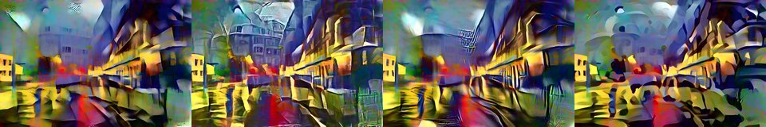

← Async Art — living works · all collections
by Hulki Okan Tabak · Async Art Master #5071 · four-phase · time rule: UTC
Updates four times a day to reflect sunrise / day / sunset / night cycles.

Sunrise 06:00–06:59 · Day 07:00–17:59 · Sunset 18:00–18:59 · Night 19:00–05:59 (UTC)
The full-size files live on IPFS; each is linked on three public gateways, in the order to try them (gateway.pinata.cloud, ipfs.io, dweb.link). Every line says what our own check found: 5 we keep this file pinned, 1 our own copy, pinned here and verified on upload.
QmQdaiboJAThCg… gateway.pinata.cloud · ipfs.io · dweb.link — we keep this file pinned, checked 2026-09-24 11:46QmcSBzRPPoGJhG… gateway.pinata.cloud · ipfs.io · dweb.link — we keep this file pinned, checked 2026-09-24 11:46QmWsAagtcSgNq4… gateway.pinata.cloud · ipfs.io · dweb.link — we keep this file pinned, checked 2026-09-24 11:46QmY1phm5ysUUCW… gateway.pinata.cloud · ipfs.io · dweb.link — we keep this file pinned, checked 2026-09-24 11:46bafybeiccafw55… gateway.pinata.cloud · ipfs.io · dweb.link — our own copy, pinned here and verified on upload, checked 2026-09-22QmNYjkrLHqzYpk… gateway.pinata.cloud · ipfs.io · dweb.link — we keep this file pinned, checked 2026-09-24 11:46QmcSBzRPPoGJhG… gateway.pinata.cloud · ipfs.io · dweb.link — we keep this file pinned, checked 2026-09-24 11:46QmcSBzRPPoGJhG… gateway.pinata.cloud · ipfs.io · dweb.link — we keep this file pinned, checked 2026-09-24 11:46QmY1phm5ysUUCW… gateway.pinata.cloud · ipfs.io · dweb.link — we keep this file pinned, checked 2026-09-24 11:46QmQdaiboJAThCg… gateway.pinata.cloud · ipfs.io · dweb.link — we keep this file pinned, checked 2026-09-24 11:46QmWsAagtcSgNq4… gateway.pinata.cloud · ipfs.io · dweb.link — we keep this file pinned, checked 2026-09-24 11:46AI x Street of Lost Dreams by Hulki Okan Tabak 4 piece Artificial Intelligence based programmable artwork on Async Art 1/1 minted on 2022 ... This artwork is an AI led derivative version of the eponymously titled work on Async Art at https://async.art/art/master/0xb6dae651468e9593e4581705a09c10a76ac1e0c8-3396. I have run experimental variations on the base image which is one of the photographs used in this address. I have created a similar 4 piece pure GAN driven image set that can be viewed alongside the original mint on Async Art. Part of a series of Marylebone, London based artworks. All of these works consist of photographs taken by me in January 2020. It is the time of Lunar New…
async.art · OpenSea · Etherscan
Generated archive pages. Content identifiers point to the public IPFS network.